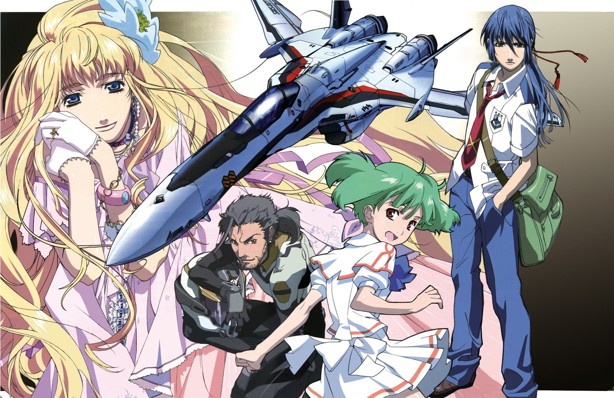

マクロスF
あらすじ
地球人類と異星巨人種族「ゼントラーディ」とのファースト・コンタクトを
機に第一次星間大戦が勃発した。1年あまりにわたる戦いは、地球を死の星へと
変貌させ、そこに住まう生命の大半を死滅に追いやった。
アイドル歌手リン・ミンメイの貢献により決戦に勝利した人類は、文化に共鳴する
一部のゼントラーディ人とともに新統合政府を樹立し、荒廃した地球環境の再生を
目指した。また、星間戦争の再発に備え、全宇宙への種の保存・拡散を目的とした
「銀河播種計画」を立案。巨大な居住艦を中心に大規模移民船団が次々と結成され、
人の住める惑星を探して銀河の方々へと旅立っていった。
